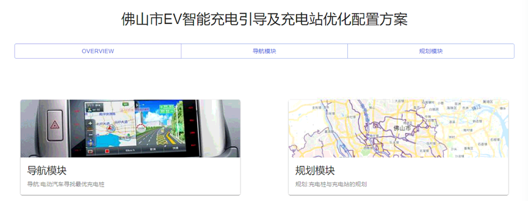
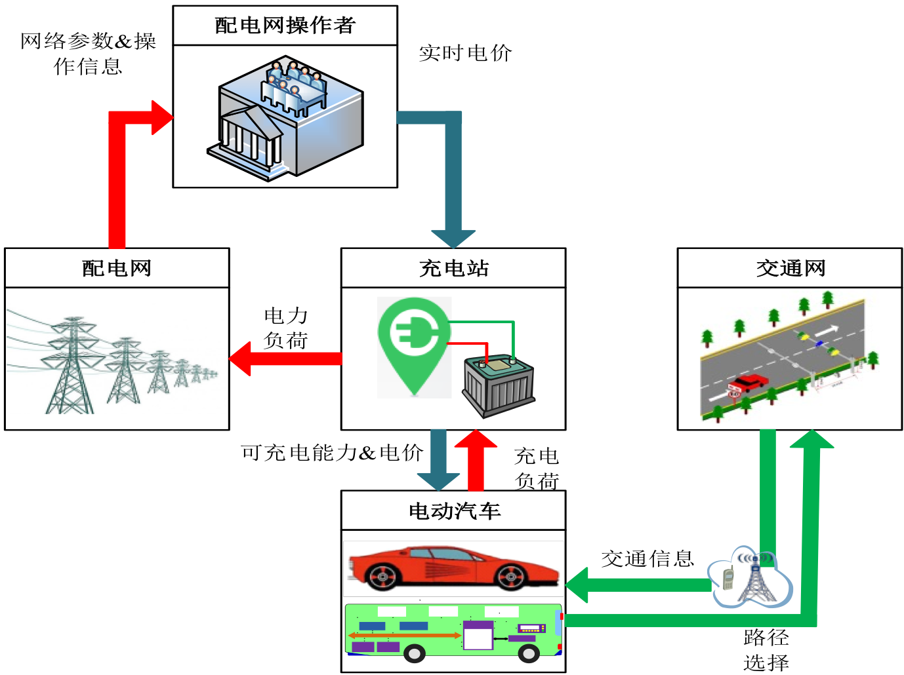

The Anomaly Detection Algorithm of Electric Vehicles-Distribution Power Network in Suzhou city(苏州市电动汽车-配电网充放电异常检测算法)
Xingxun Jiang, Xianhai Meng, Hui Gao

Electric Vehicle's Intelligent Charging Guidance and Charging Station Optimal Configuration Design in Foshan city(佛山市电动汽车智能充电引导及充电站优化配置方案展示系统)
Xingxun Jiang, Kexin Li, Hui Gao
[Code]

Power Grid Participated Electric Vehicles Dispatching Strategy and corresponding Application in Nanjing main city(南京市主城区内电动汽车参与电网调度策略及其系统)
Xingxun Jiang, Yingjun Wu An instance for IEEE 14 nodes power system, 100 BYD Qin EV300 eletric cars and the transporation network of Nanjing main city. An display system for intelligent charging guidance based on the requirements of user, power grid and the transporation network of Nanjing main city.